BSc Applied Computer Science, cum laude· edge AI on drones
· offensive security
↓Scroll to explore
// 01 / selected work
Nine projects. Click to expand.
Security research, robotics, autonomous systems, and software. Each tile opens its full case.
01
// 01robotics × ai01 / 09
Autonomous Drone YOLO Tracking
Built from scratch in Tokyo. YOLO detects a target, the drone yaws to follow it. Shipped as a live demo at Japan IT Week.
PythonYOLOv8ROS2ASR-D501MAVLink
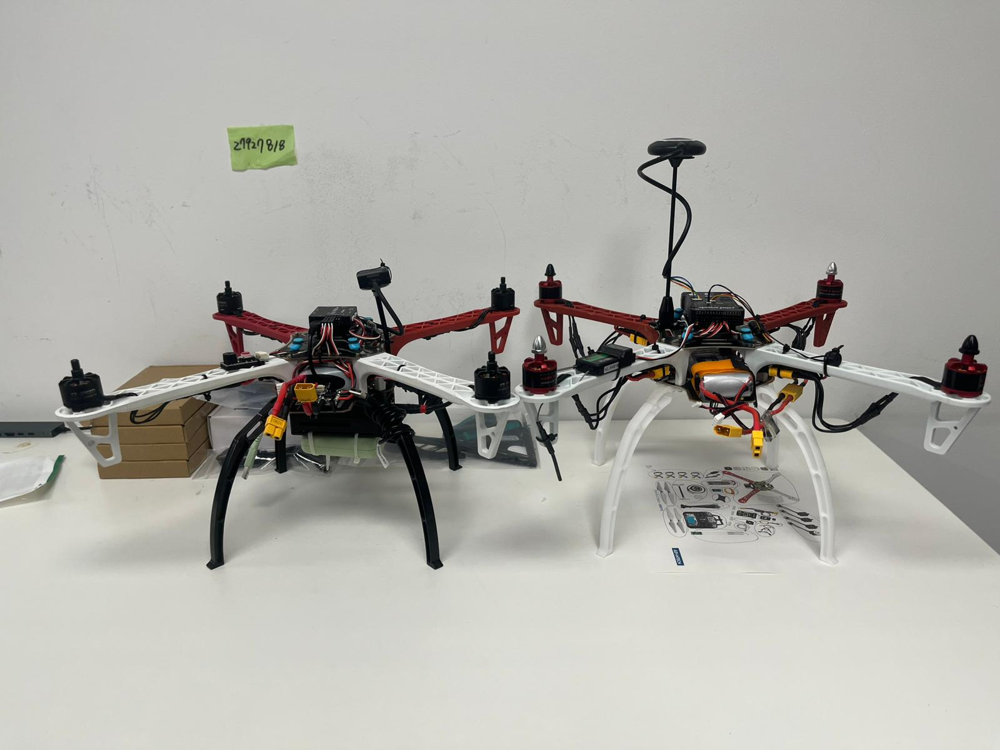
02
// 02software × tooling02 / 09
GeoMeta Map Geography Trainer
Click any country, write what gives it away. Notes, tags and clues on an interactive world map, then flip it around and see every country that shares one.
JavaScriptLeafletGeoJSONMarkdownSelf-hosted
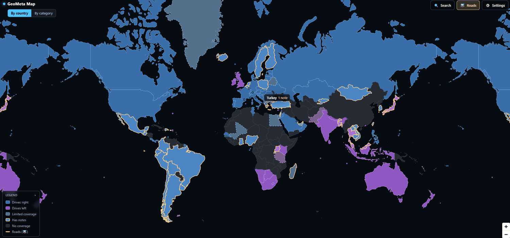
03
// 03software × ai03 / 09
EraseAll Object Removal
Detects every person in a photo, you pick who stays, one click removes the rest. Runs entirely on a normal laptop CPU. No GPU, no upload, nothing leaves the machine.
PythonInpaintingSegmentationCPU-onlyOffline
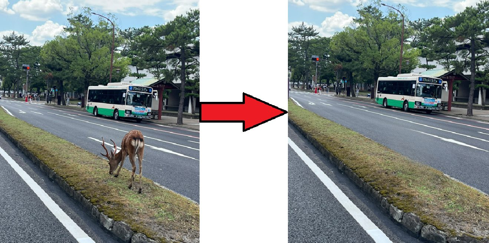
04
// 04robotics × ai04 / 09
Autonomous Behavior Tree
Custom ROS 2 stop-and-wait pipeline for safe operation in tight, dynamic environments.
ROS2C++Behavior TreesNav2
05
// 05systems × security05 / 09
BIOS Flash Utility
Hardened C tool with bounds-checking, allowlists, and POSIX process isolation. No shell injection surface.
CPOSIXLinux
06
// 06security06 / 09
Real-World Penetration Testing
Full security audits with CVSS scoring for two real clients: a high school and a pharmacy. Both presented to leadership.
NmapWiresharkBurp SuiteCVSSReporting
07
// 07security07 / 09
Honeypot & CTF Platform
Deliberately-exposed admin panel with Grafana monitoring. Survived classmate attacks unbreached.
DockerGrafanaLinuxCTF
08
// 08software08 / 09
Labyrinth Browser Game
Classic board game rebuilt in the browser. Full game logic, hand-drawn art, custom tile system. A first-year project that taught everything.
HTMLCSSJavaScript
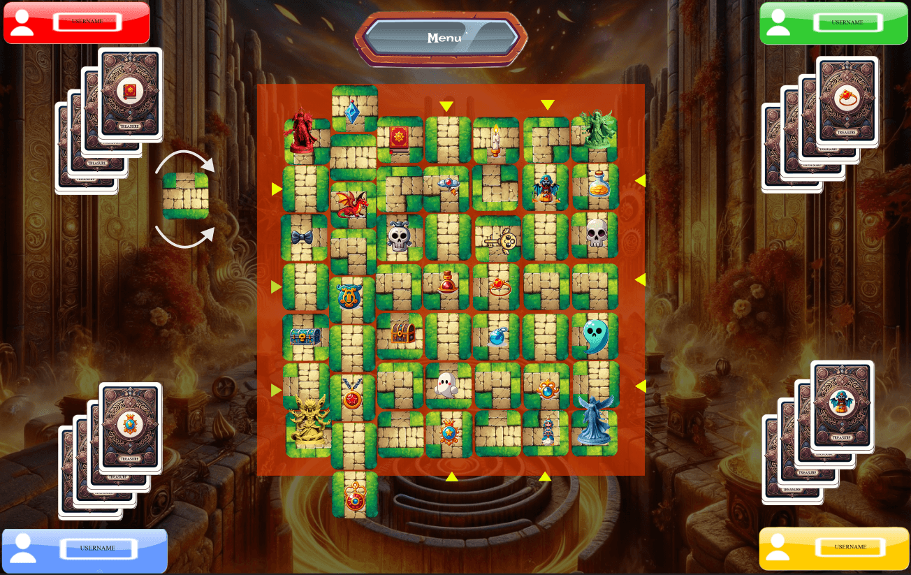
09
// 09concept × ux09 / 09
BinBots Drone Fleet · 2079
Speculative service for skyscraper waste collection in 2079. Full Figma + Vue concept, end-to-end app + admin + marketing site.
FigmaVueJSUI/UXConcept
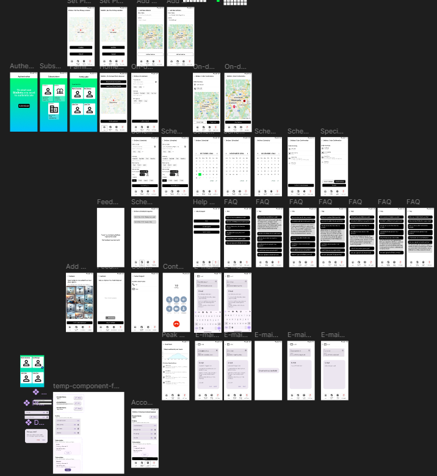
// 02 / research
Eighty-five times faster.
Bachelor thesis, written during my internship at Advantech in Tokyo.
The question: is a Neural Processing Unit actually worth it on a drone-sized board?
Object Detection on an Embedded Drone Companion Computer
Comparing Inference Hardware Approaches
Howest University of Applied SciencesAdvantech Co., Ltd., Tokyo2025 / 2026
One YOLOv8 detector, deployed twice on the same Advantech ASR-D501 board: once on the ARM CPU,
once offloaded to the Qualcomm QCS6490's Hexagon NPU. Same model, same camera, same drone, same
motor-control loop. Only the silicon doing the inference changes.
The NPU build runs YOLOv8n at 110.3 frames per second while drawing roughly ten
percent less total board power. The thesis documents the whole deployment path: PyTorch
through ONNX to INT8 TFLite, moving the vendor's Yocto pipeline onto Ubuntu, handling camera input
across sensor types, plus a benchmark sweep over eight YOLO variants to characterise how NPU
throughput scales with model size.
110.3FPS
YOLOv8n on the Hexagon NPU
85×
throughput vs. the same board's CPU
67×
better inference performance per watt
Same model, three targetsYOLOv8n · frames per second
ASR-D501 NPU110.3
ASR-D501 CPU1.3
Raspberry Pi 51.1
How throughput scales with model sizeeight variants · INT8 · ASR-D501 NPU
YOLOv8n110.3
YOLOv8s89.9
YOLOv8m42.6
YOLOv8l30.8
YOLOv8x20.3
YOLOv11n103.5
YOLOv11s82.6
YOLOv11m40.2
// what the numbers say
Is a Neural Processing Unit worth it for object detection on a drone?
On this hardware, decisively yes. The same YOLOv8n model runs at 110.3 FPS
on the Qualcomm QCS6490's Hexagon NPU versus 1.3 FPS on the same board's
ARM CPU, about 85× the throughput, while the board draws roughly 10% less total
power. On the CPU the detector cannot keep up with a live camera feed at all, so a drone
cannot react to what it sees. The NPU is what makes onboard detection a real-time control
input rather than a recording.
How fast is YOLO on the Qualcomm QCS6490 NPU?
Measured on an Advantech ASR-D501, INT8-quantized, frames per second:
YOLOv8n 110.3, YOLOv8s 89.9, YOLOv8m 42.6, YOLOv8l 30.8, YOLOv8x 20.3.
YOLOv11 tracks closely: YOLOv11n 103.5, YOLOv11s 82.6, YOLOv11m 40.2.
Throughput falls off sharply above the small variants, so the nano and small models are
the practical choices for a flight-control loop.
Can a Raspberry Pi 5 run YOLOv8 object detection in real time?
Not on the CPU. In the same benchmark a Raspberry Pi 5 reached 1.1 FPS
with YOLOv8n, close to the ASR-D501's own CPU result of 1.3 FPS, and roughly a hundred
times slower than that board's NPU. Real-time onboard detection needs a dedicated
accelerator; general-purpose ARM cores are not enough at this model size.
What does it take to deploy a YOLO model on the Hexagon NPU under Ubuntu?
The conversion path is PyTorch → ONNX → INT8 TensorFlow Lite. The harder part is
everything around it: the vendor ships a Yocto-based GStreamer pipeline that has to be
adapted to run on Ubuntu, and camera input handling differs by sensor type. Quantizing
the model was the quick step. The pipeline and camera plumbing took most of the work.
65 pages, IEEE-cited. Covers the literature on CPU / GPU / NPU inference, the quantization
pipeline, the full benchmark methodology, and the power measurements behind the numbers above.
The detection and motor-control code is public.
The build did not stop at the report. It ran on the show floor for the duration of the expo,
demonstrating the Advantech ASR-D501 and the Qualcomm QCS6490 NPU as a companion computer for
drone applications. I stood at the booth and explained the pipeline to visitors: camera in,
detection on the NPU, yaw commands out to the flight controller, all onboard.
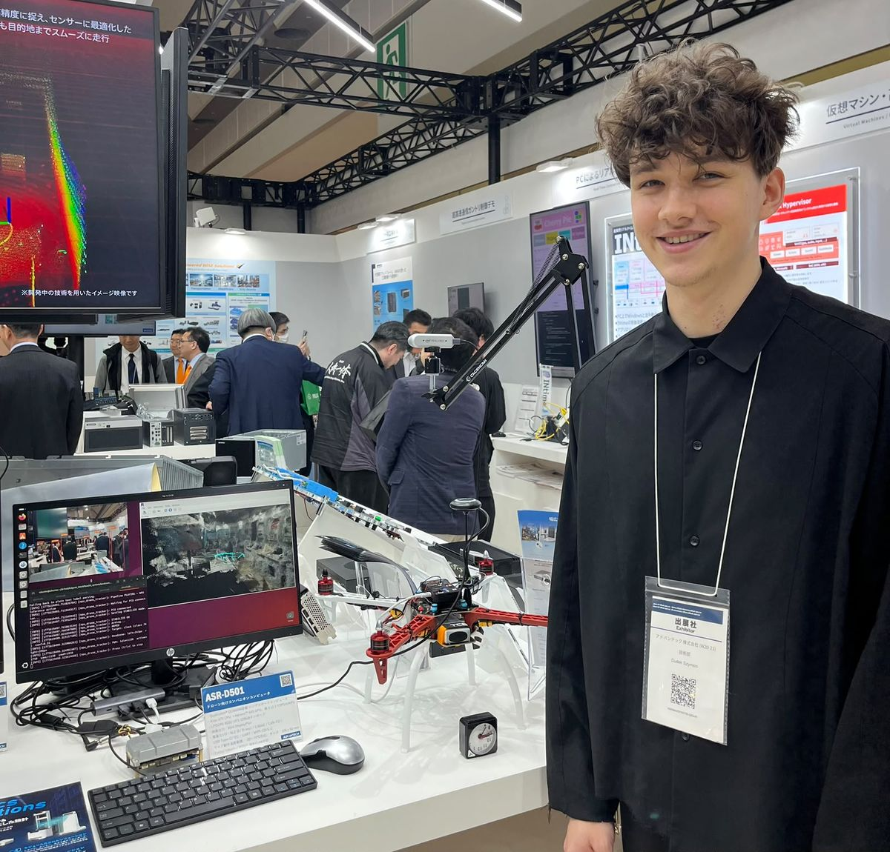
At the booth, Tokyo Big Sight
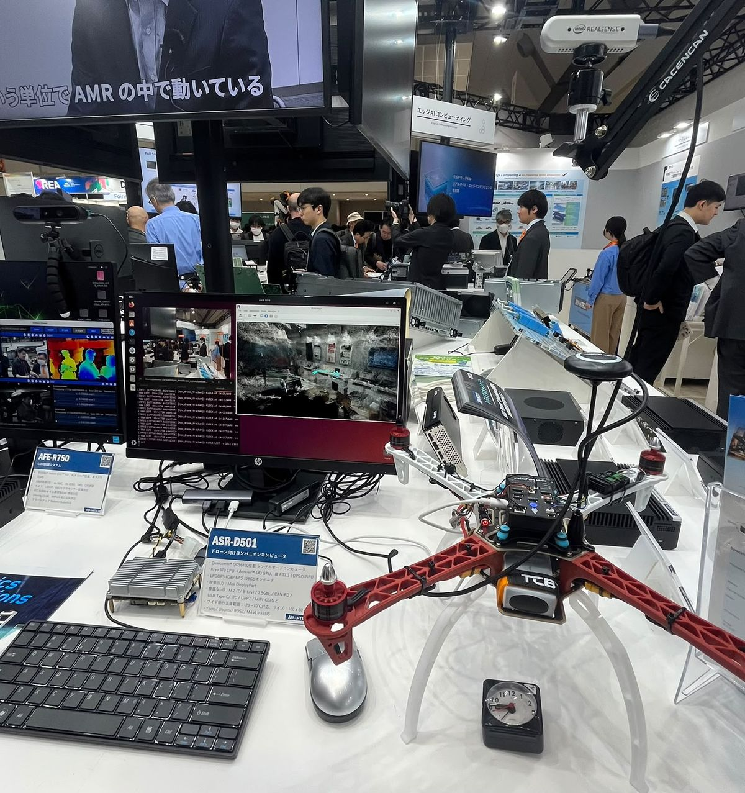
The demo station: live detection and RTAB-Map SLAM
// 03 / hackathons
High-pressure problem solving.
Apr 20253rd Place 🥉
HELMo Industry 5.0 Hackathon
Liege, Belgium · HELMo & Technifutur
Built a web application utilizing open data from multiple Belgian databases, including regional solar panel electricity production data. Users could input their region, list their household devices, and optionally specify per-device power consumption (we had average values as fallback for most common appliances). The app calculates exactly how many solar panels they need and how many would actually be worth the investment.
The theme was Industry 5.0 - putting humans at the center of technological processes. Presented the solution to the jury and placed 3rd overall.
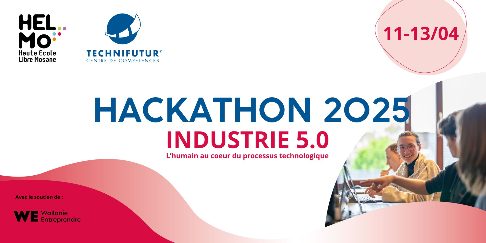
Nov 2025
Phishaton 2025
6h hackathon · Outkept · Savaco
A social engineering focused hackathon where teams were tasked with crafting phishing campaigns targeting an organization and a celebrity, as well as creating a deepfake phishing video of a public figure. A hands-on exercise in understanding the offensive side of social engineering to better defend against it.
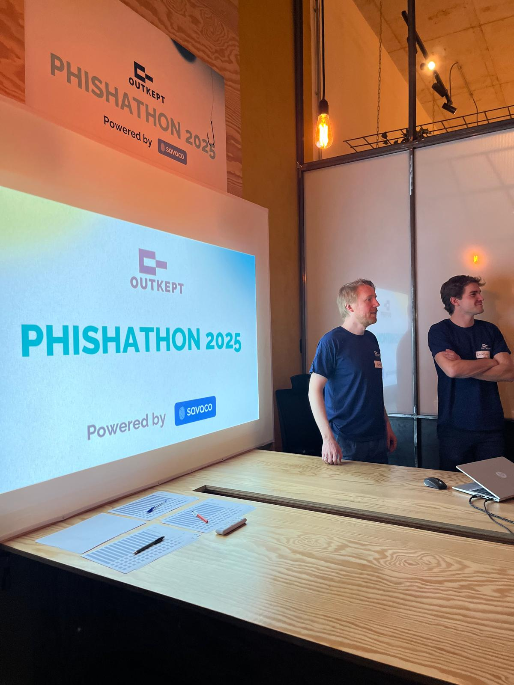
Nov 2025
Hack The Future
Cronos Group · Antwerp, Belgium
Participated in one of Belgium's largest tech hackathons bringing together hundreds of students to tackle industry-sponsored challenges across various domains. A solid experience in working under pressure with unfamiliar tech stacks and tight time constraints.
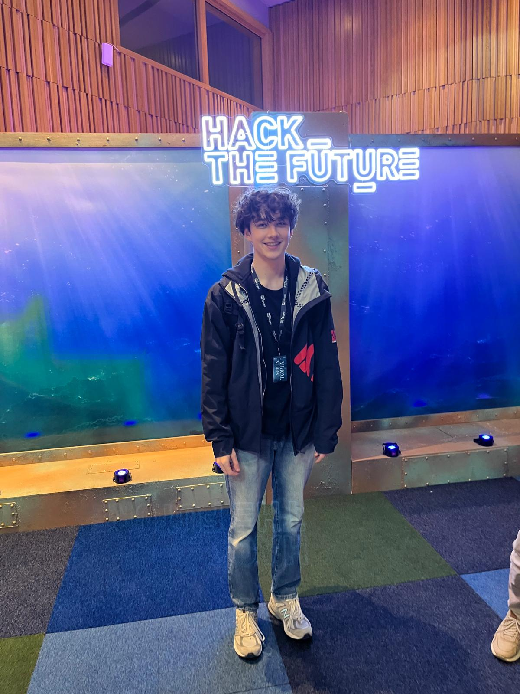
// 04 / credentials
Signed, sealed.
Cisco Networking Academy
CyberOps Associate
Security operations centre track: monitoring tooling, protocol and endpoint analysis,
cryptography's impact on network monitoring, intrusion data analysis, alert evaluation,
and incident response models.
Issued Jul 2026
Bacum laude
Howest University of Applied Sciences
BSc Applied Computer Science
Three-year bachelor in the Cybersecurity track: 180 credits, EQF level 6.
Graduated cum laude with the drone inference thesis as final work.
Conferred 26 Jun 2026
C1english
Cambridge Assessment English
C1 Advanced (CAE)
Certified C1 proficiency. Three years of study delivered entirely in English in Belgium,
plus a full internship and thesis defence conducted in English in Japan.
Cambridge English
// 05 / profile
The story.
▸ Origin Story
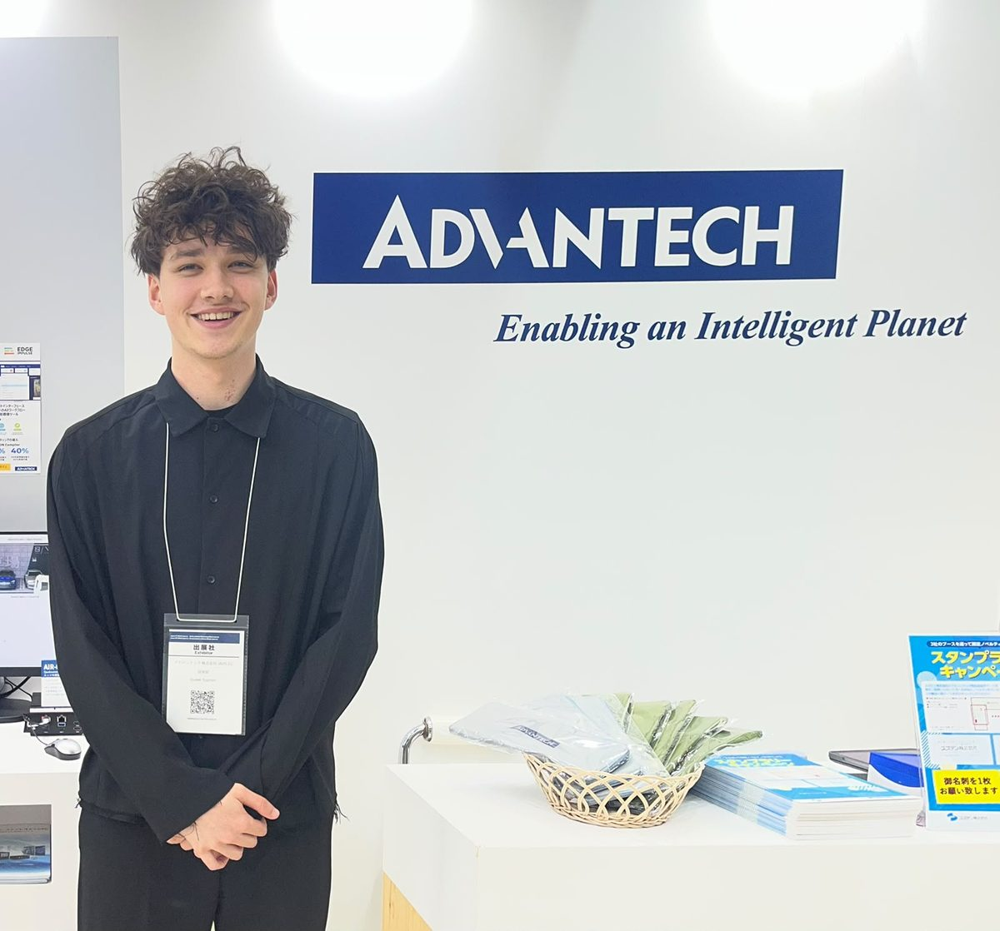
Advantech, Tokyo, Spring 2026
Born and raised in Poland. Spent six years in music school alongside regular education, studying music theory, history, and playing piano from age 7 to 12. That training shaped how I think: pattern recognition, discipline, and a structured approach to complex problems.
At 18 I moved to Belgium alone to study cybersecurity at Howest in Brugge, drawn by the program's reputation and the challenge of building an independent life in a new country. I graduated cum laude in June 2026, after a spring in Tokyo interning at Advantech, building autonomous drones with AI-powered navigation and shipping the result to a live expo floor.
In September I move to Austria for a Master's in Cyber Security and Resilience. The plan is to keep working where security meets machines that move.
▸ Journey
Sep 2026
MSc Cyber Security & Resilience next
St. Pölten University of Applied Sciences, Austria
Jun 2026
BSc Applied Computer Science, cum laude
Howest University of Applied Sciences, Brugge, Belgium. Cybersecurity track, 180 credits.
Feb–May 2026
AI & Robotics Intern @ Advantech
Tokyo, Japan. Autonomous drones, edge inference, flight control. Demo shipped to Japan IT Week.
2023–2026
Moved to Belgium, alone, at 18
Three years of study delivered in English, in a third language, in a fourth country.
2019–2023
High School
Poland
2012–2017
Music School
Piano performance, music theory & history. Poland.
▸ Skills & Tools
PentestingDigital ForensicsNetwork SecurityPythonCLinuxComputer VisionEdge AI / NPUDrone SystemsROS 2WiresharkBurp SuiteNmapDockerGit
Built a fully autonomous drone system for Advantech's Japan IT Week demo. Assembled the hardware from scratch, configured the Pixhawk flight controller, and installed ROS 2 with MAVROS on the Advantech ASR-D501 companion computer. Wrote a Python pipeline that runs YOLO for real-time object detection, locks onto a target, tracks its screen position, and sends yaw commands to the motors so the drone rotates to follow the object while hovering at a fixed altitude.
Also developed a second variant running a quantized YOLO model on the board's Qualcomm Hexagon Neural Processing Unit, reaching 110.3 FPS against 1.3 FPS on the same board's CPU. That comparison became my bachelor thesis.
In parallel, built a real-time SLAM pipeline with RTAB-Map for 3D environment reconstruction, laying the groundwork for fully spatially-aware drone navigation.
A study tool for GeoGuessr. Every country on the world map is clickable, and each one holds your own notes on what identifies it: bollards, road markings, license plates, utility poles, script, the shape of a stop sign. Notes are written in Markdown, screenshots paste straight in, and each one is filed under a category and tagged.
Clicking a country opens its dossier: driving side, top-level domain, phone prefix, currency, language and writing system, plus every note recorded for it. Countries are shaded by whether they drive on the left or right and outlined when they have notes, so the map itself shows what has been covered and what has not.
The part that makes it useful for actual learning is the inverse view. Switch to browse by category or tag and the map re-colours to show every country sharing that clue at once. Pick "yellow plates" and Colombia, Israel, the Netherlands and Uganda light up together. That turns a pile of individual notes into the pattern you are really trying to memorise.
// world overview / coverage and driving side at a glance
// country dossier / Thailand
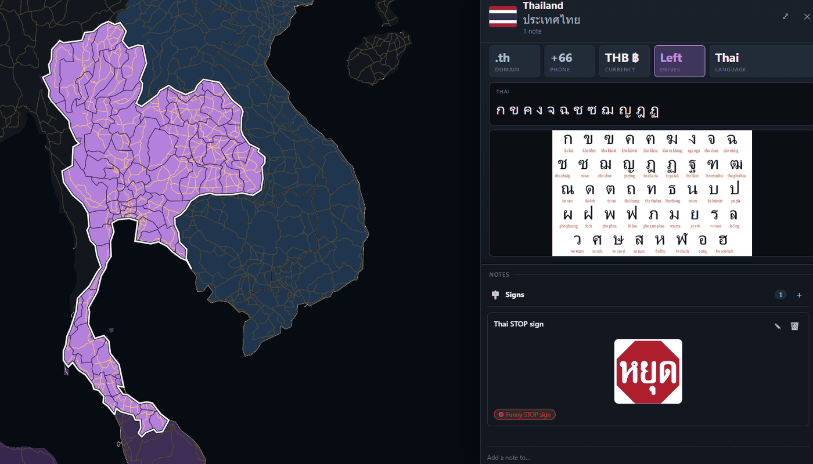
// writing a note / category, tags, regions, screenshots
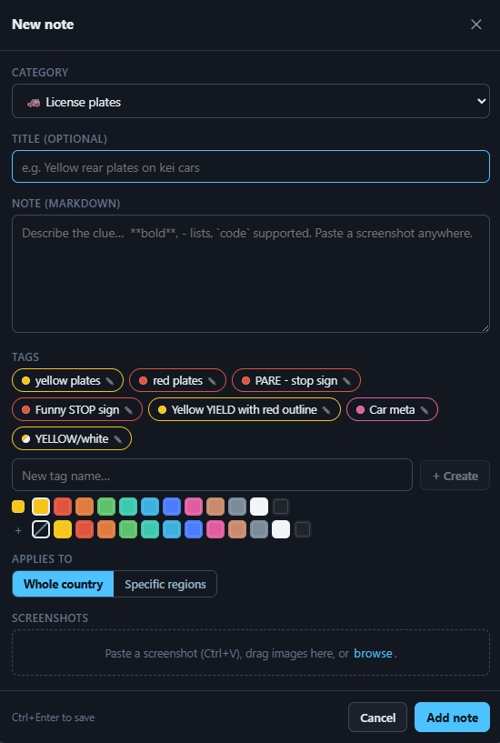
// browse by tag / every country with yellow plates
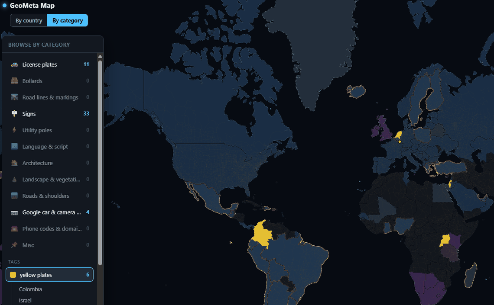
03software × ai
EraseAll Object Removal
PythonSegmentationInpaintingCPU-onlyOffline
An image editor built around one job: taking things out of photographs and reconstructing what was behind them. The constraint I set myself was that it had to run on an ordinary laptop CPU: no dedicated GPU, no cloud service, no uploading someone's holiday photos to a server.
Several selection modes cover different situations. Select people detects everyone in the frame automatically and labels them, so you tick which ones stay and remove the rest in a single click. Smart and Object snap to edges for quick selections, Raw is a plain brush for full manual control, and there is a clone stamp for touching up whatever the fill gets wrong.
After a removal the tool proposes several fill variants and you keep the one that reads best, rather than being stuck with a single guess. Clearing an entire tourist crowd out of a temple courtyard takes about ten seconds of selection work.
// tōdai-ji, nara / entire crowd removed, one person kept
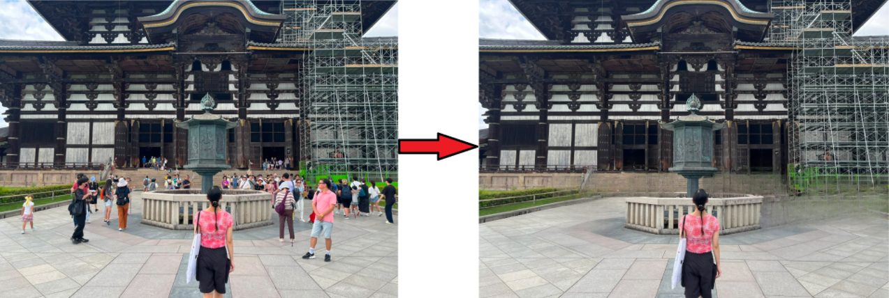
// nara deer / kerb, grass and road markings reconstructed
// select people mode / three subjects detected, then removed in one click
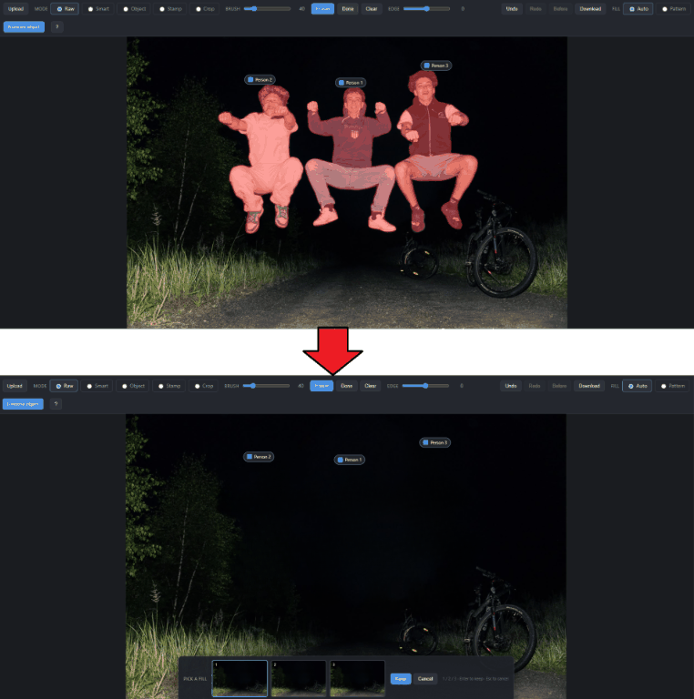
04robotics × ai
Autonomous Navigation Behavior Tree
ROS2C++Behavior TreesNav2
Engineered a custom ROS 2 Behavior Tree for the ROSMASTER X3 to handle autonomous navigation in tight, dynamic environments. Default navigation stacks try to aggressively replan around obstacles, which creates collision risks in spaces like warehouse aisles or restaurant dining areas.
Designed a "stop-and-wait" pipeline instead: when the robot detects a dynamic obstacle (like a person), it halts along its trajectory, waits for the path to clear, then resumes its original route. This guarantees predictable, collision-free operation and prevents the robot from dangerously swerving into walls or furniture.
// stop-on-obstacle in action
05systems × security
BIOS Flash Utility
CPOSIXLinux
Built a compiled, systems-level C utility for Advantech that streamlines BIOS flashing. The tool scans the local directory for .rom files and generates an interactive menu for the operator. Includes strict memory-bounds checking to prevent buffer overflows, an input allowlist to reject suspicious filenames, and uses native POSIX process management (fork() and execvp()) to execute the flash tool directly via the kernel, eliminating any risk of shell-based command injection.
06security
Real-World Penetration Testing
NmapWiresharkBurp SuiteCVSSReporting
Conducted full security audits for two real clients as part of a Howest project: a high school with over 1,000 students and 1,000+ devices active on the network daily, and a local pharmacy. All vulnerabilities were scored using the CVSS (Common Vulnerability Scoring System) framework to prioritize findings by severity. Documented everything with concrete mitigations, presented the reports to both IT departments, and wrote management summaries so leadership could quickly understand the risks. Both clients were highly satisfied with the results.
07security
Honeypot & CTF Platform
DockerGrafanaLinuxCTF
Built a website with an admin panel and integrated honeypot, monitored using the Grafana stack with custom dashboards. Created 3 CTF challenges for fellow students. In the second phase, the site was intentionally exposed for classmates to attack. No successful breach occurred: neither data nor the admin panel was compromised, and most attack attempts were logged and visualized on the dashboards.
08software
Labyrinth Browser Board Game
HTMLCSSJavaScript
Developed a fully functional browser-based version of the board game "Labyrinth" during my first year at Howest. Implemented the complete game logic and all rules, and created a custom set of images, icons, tiles, characters, and a full menu interface from scratch.
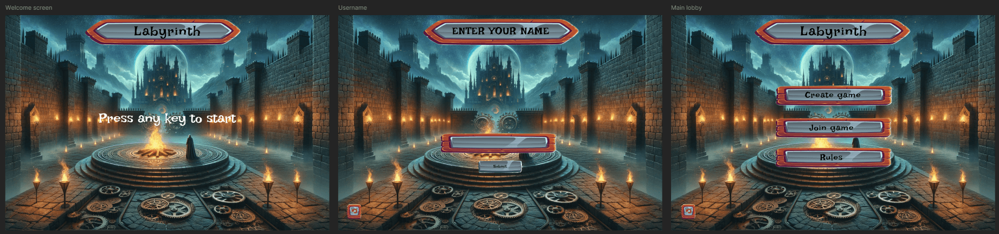
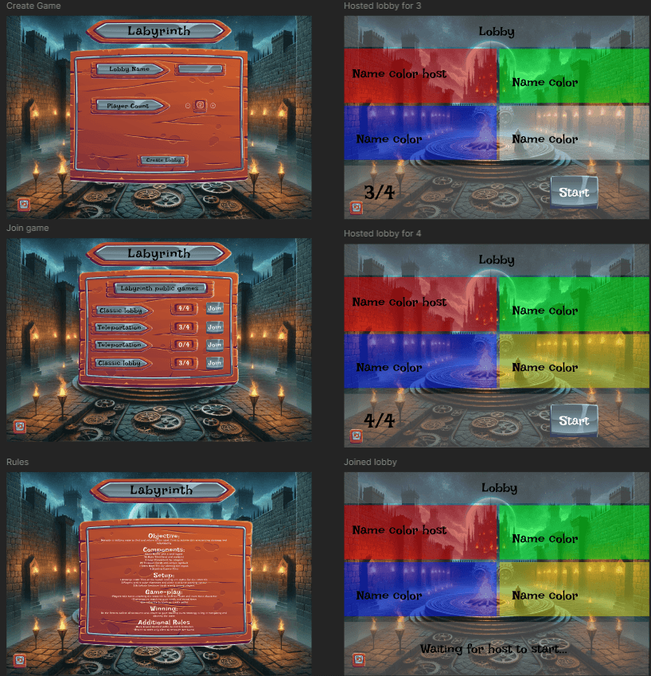
09concept × ux
BinBots Drone Fleet · 2079
FigmaUI/UXVueJSConcept
Created a full proof-of-concept for a futuristic business set in 2079, where a returning space colony needs new infrastructure. The idea: a drone fleet that picks up trash from residents' windows in dense skyscrapers and delivers it to wastelands outside habitable zones.
Built a complete Figma wireframe with every button and flow functional across both the user app and admin panel. Also developed a marketing website for the service. The concept won strong marks for creativity and execution depth.